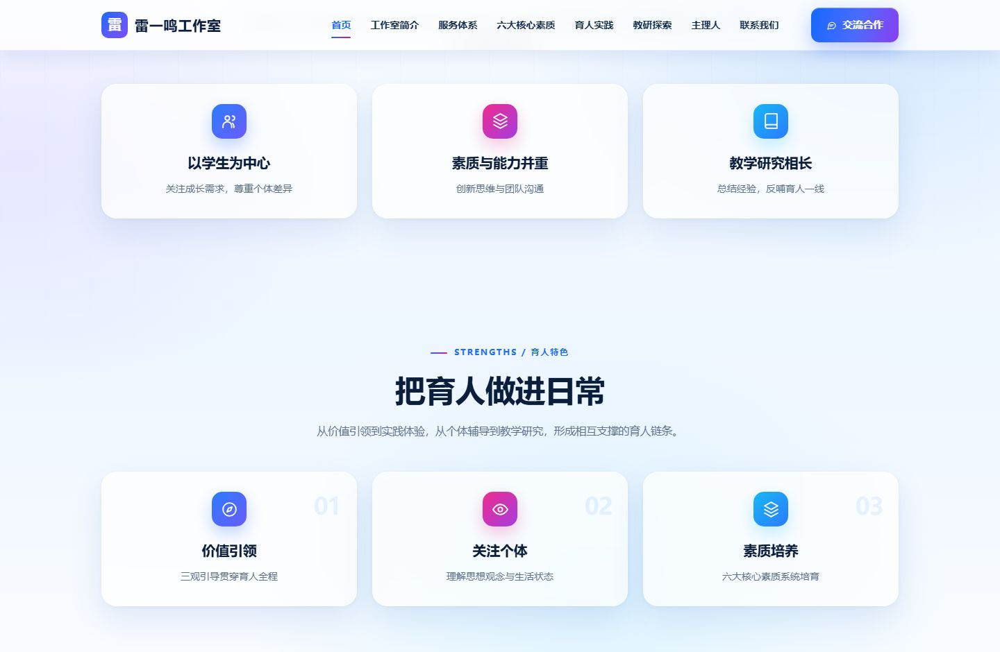
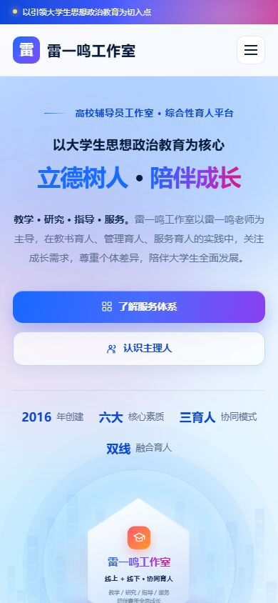
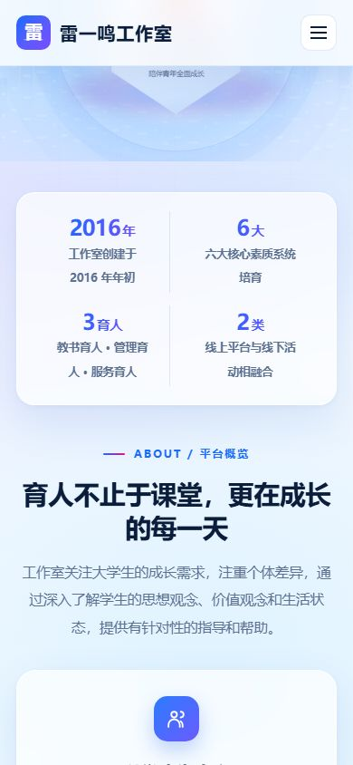

PC 与手机，四个页面实拍
分别呈现 PC 首页、PC 内页、手机首页与手机内页，便于对照栏目结构在两端的一致性。




从构思到收录，逐项拆解
以大学生思想政治教育为核心的综合性育人平台官网。
构思与定位
面向在校大学生与辅导员同仁两类对象，首页用「立德树人 · 陪伴成长」与「教学 · 研究 · 指导 · 服务」定调，用创建年份、核心素质、三育人协同、双线融合四组数字概括平台，再分两条服务线展开。
框架结构
导航为服务体系、主理人、育人路径、工作室实景与交流合作。首页纵向为主视觉、数据、平台概览、育人特色、两类服务方向、五步育人路径、六项服务体系、主理人介绍、工作室实景、FAQ 与合作，路径与服务两条线相互印证。
风格与配色
高校育人平台的温和书卷风：标题端正规整，编号与流程线梳理路径，配书法牌匾、课堂授课与同行研讨照片，图文比例均衡，不追求商业感。实景板块用图片卡承载真实场景，补足机构可信度。 以暖米白与深红／藏蓝搭配，呼应牌匾与校园语境；浅灰作分隔，蓝色用于链接与编号。整体沉稳、可读，符合教育机构的公共形象，长时间阅读也不易疲劳。
SEO 搜索优化
标题覆盖大学生思想政治教育、辅导员工作室、立德树人等词；六项服务分别展开并配有独立描述，覆盖价值引领、素质培养、主题班会、成长辅导、教研推广等长尾；FAQ 解释服务对象与线上线下结合方式；主理人介绍提供资质与成果。
GEO 跨境本地化
面向海外客户时，雷一鸣工作室这类育人工作室站点可按目标市场补充对应语言页面、币种与地区联系方式，配置语言与地区标注，并把「三育人模式」「六项服务」等核心词按当地表达重写；正文保留可引用的事实段落，便于谷歌与 AI 问答摘引，也便于后续按地区做关键词扩展。
CRO 转化体验
转化路径上，三育人模式与六项服务构成主要信任证据，联系入口与咨询二维码放在内容末尾；移动端保持卡片单列、按钮足够大，减少填写与跳转步骤；把常见问题与售后说明前置，降低决策时的流失。